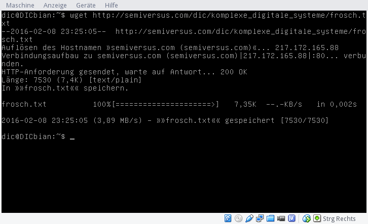
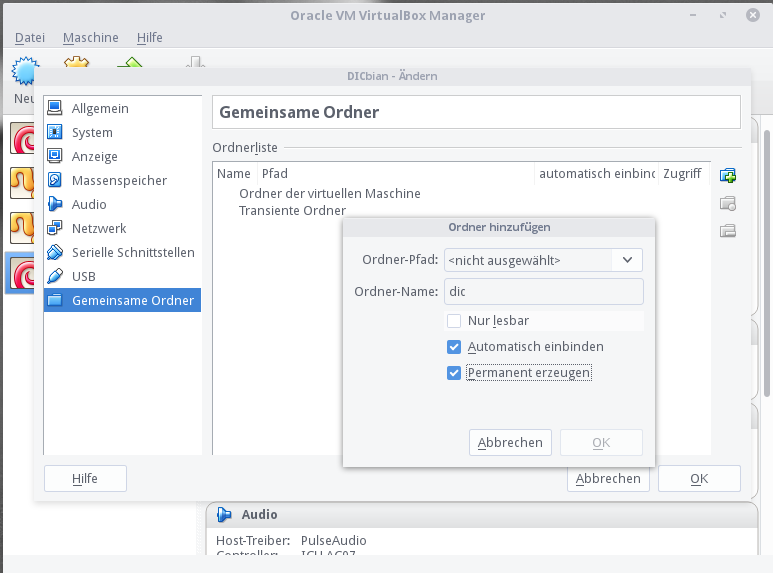

Tutorial 3 - Reguläre Ausdrücke
Dieses Tutorial baut auf den Unterlagen der Tuxcadamy auf. Auch Aufgabenstellungen sind teilweise dort übernommen worden. Die Unterlagen stehen unter der CC-BY-SA 4.0 Lizenz und somit auch dieses Tutorial.
Eine Kopie der Unterlagen kann man hier herunterladen.
Vorbereitung
Für die folgende Übung benötigen wir die Datei frosch.txt auf der virtuellen Maschine.
Dazu gibt es zwei Möglichkeiten: Download mittels wget oder Einrichten eines gemeinsamen Ordners. Es wird also nur
ein Weg der zwei genannten benötigt.
Download mittels wget
wget ist ein Kommandozeilentool um Dateien mittels http:// Protokoll herunterzuladen. wget hat einen riesigen
Funktionsumfang, wir benötigen aber nur das notwendigste:
wget http://semiversus.com/dic/komplexe_digitale_systeme/frosch.txt
Wenn eine Internetverbindung besteht sollte die Datei heruntergeladen werden und im aktuellen Verzeichnis abgelegt werden.

Einrichten eines gemeinsamen Ordners
Im VirtualBox Manager wird DICbian ausgewählt und in der Toolbar auf Ändern geklickt. Unter dem Punkt Gemeinsame Ordner wird ein entsprechender Eintrag hinzugefügt.

- DICbian neu starten
- Einloggen als normaler Nuter (
dicmit Passwortdic) - Superuser werden (mittels
suin der Kommandozeile und Passworthtl) - Gemeinsamen Ordner mounten mittels
mount -t vboxsf dic /mnt(wobeidicder Name des Eintrags für den gemeinsamen Ordner ist - Nun ist der gemeinsame Ordner unter
/mntverfügbar - Wechsle in das entsprechende Verzeichnis und kopiere die Datei ins Home-Verzeichnis (
~)
Übung
Arbeite dich durch das Kapitel 7 (Seite 99 bis 104) und beantworte die jeweiligen Übungen.